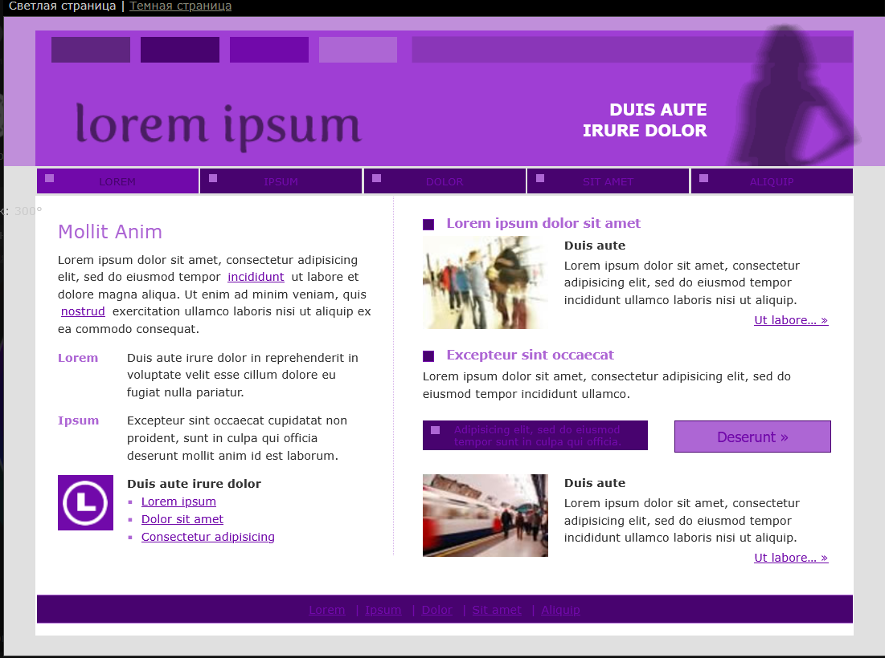

Европейские критерии безопасности ИТ (ITSEC)

Цветовая схема проекта
Сайт использует контрастные светлую и тёмную темы. Ниже приведены четыре иллюстрации, отражающие выбранные цвета и варианты оформления.
- Цветовой круг проекта
- Таблица HEX/RGB-кодов основных оттенков
- Скриншот светлой страницы
- Скриншот тёмной главной

Рис. 1 — цветовой круг проекта
| Назначение | Цвет | HEX | RGB |
|---|---|---|---|
| Основной 1 | #009999 | 0 153 153 | |
| Основной 2 | #1D7373 | 29 115 115 | |
| Основной 3 | #006363 | 0 99 99 | |
| Акцент 1 | #33CCCC | 51 204 204 | |
| Акцент 2 / hover | #5CCCCC | 92 204 204 |

Рис. 2 — пример светлой темы

Рис. 3 — пример тёмной темы (главная)
| Главная | Цветовая схема | Валидность | Кроссворд | Тест | Глоссарий | Карта сайта | Разработчик |